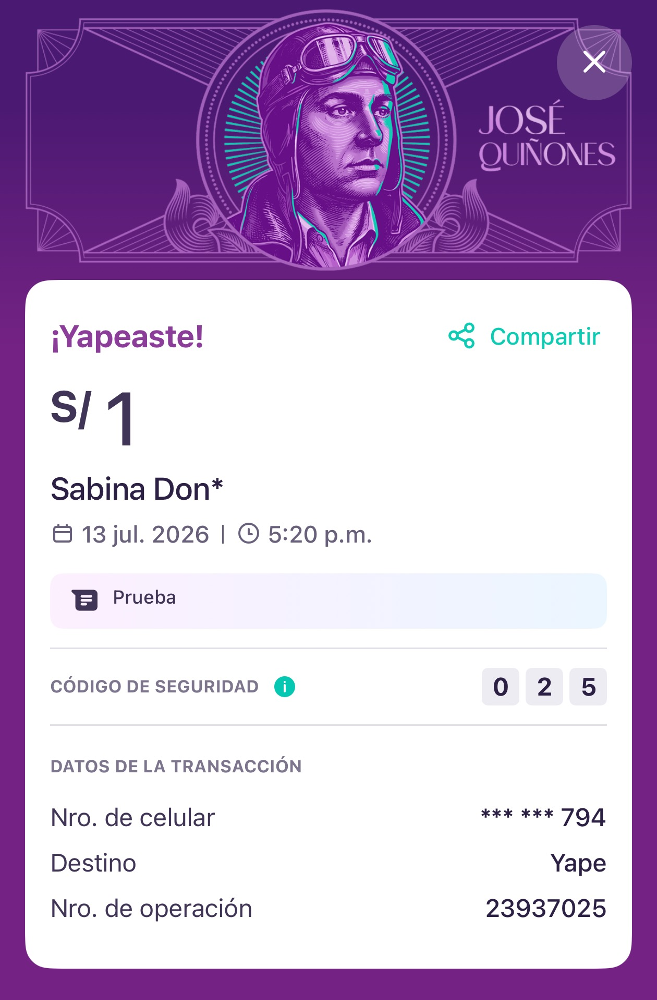

Everyone's wallet
Cash still matters in Peru, but its share fell sharply as e-payments took over daily commerce, led by Yape and other e-wallets.
My app verifies that a Yape payment on a customer's screen is real.
A queue at a market stall: a customer shows a screenshot saying the payment went through, and the merchant has seconds to accept. Every field on the confirmation can be faked except the operation number, and the app checks it, here against mock records rather than a live bank, before the goods leave. A secure keypad with randomized digits, double-click prevention and private-data protection guard the interface. Researched, designed and built in under a week, in a stack I had never used.
Yape began as a way to send money to a phone number. Today much of Peru pays with it daily.
It stopped being a transfer app long ago: credit, bill payments, a marketplace and remittances. A super app.
Its success created a new fraud: if everyone trusts the confirmation screen, fake the screen.
Cash still matters in Peru, but its share fell sharply as e-payments took over daily commerce, led by Yape and other e-wallets.
A market stall or bodega: the customer shows a confirmation, the queue waits, and the merchant has seconds to decide.
The most exposed are small merchants and independent workers, for whom one fake payment can erase a day's earnings.
A payment confirmation, on a phone, held up at your counter —
an image, where every field is text that can be forged.
The fake reproduces exactly what you are looking at. That is why staring harder fails.
Peru's wallet boom outran its trust infrastructure, and the fake receipt is the hole it left.
A security code shipped to close it. The public guidance still does not mention the code.
I benchmarked three innovation-center banks in markets like Peru: Nubank, Nequi and Attijariwafa. All three treat verifiable payment trust as core product, so the gap is real. Merchant finance tools were a crowded space and onboarding drifts into regulated identity; payment trust won because it is urgent and solvable in front-end alone.

With the exact design system I could build or redesign the whole app, but that isn't the purpose. This case solves one real fraud problem with front-end alone, with every framework, security and code decision understood and backed by me.
I read the front-end requirements Peru's largest bank hires for, mapped them against my skills and aimed this project at the gap.
I left the vanilla web this site is built on and entered frameworks and app development, to test first-hand what I can build.
Reshaping a successful super app takes years. I chose to learn what solving one banking problem with front-end really takes.
How it helps high-traffic shops.
Integrated technical stack.
React draws every screen from the app's data, never the reverse, so what the merchant sees always matches what the app knows. In a trust tool, that guarantee is the product.
The one failure a verification tool can't survive is a stale screen showing "verified" for a cancelled check. In React the interface is a function of state, so a verdict can't tear under rapid updates. Vanilla would mean hand-wiring every listener, and this build's one real defect was a missed listener. Angular would work, but adds a large framework to a single-job build.
TypeScript is JavaScript with a strict proofreader: it catches whole classes of errors before the code runs. In a tool that tells a merchant to trust a payment, that net isn't optional.
Every receipt field, verdict state, and API response has a declared shape, so a malformed record cannot silently flow into a verdict. The compiler runs as a CI gate on every push — the same discipline production banking code expects: typed contracts, automated checks, continuous integration.
The security layer works like a film set: the heavy bank infrastructure is openly staged scenery, while every lock the merchant touches is real, working and tested.
The scenery shows the sector's security vocabulary (TLS 1.2, RSA-2048 key pairs, mutual certificate authentication, adaptive risk scoring) on fabricated material, badged SIMULATED throughout. The lock is what the merchant touches: an in-app keypad no third-party keyboard can read, shuffling digits, an execution lock, a blocking overlay and privacy masking.
Before trusting the build, I wrote a six-scenario test protocol from the case research: does it tell a fake from a real payment, and does it avoid misfiring under pressure?
1: a forged amount on a real operation number is caught and named. 2: an unreadable security code never counts as a mismatch. 3: a double-tap or mid-flight cancel never fires the check twice. 4: the action stays inert until its preconditions hold. 5: the busy overlay truly blocks the page. 6: privacy masking never leaks a full name or number.
Only the operation number comes from the bank; the rest can be faked.
For more, access the repository.
From research to development.
This Gantt chart lays out the build as five phases, reconstructed from its plan and completion record. Each row is one phase, read from left to right on an axis of planned hours, not calendar dates: the bar's length is the hours planned, and the dashed lines show what had to finish first. Open a phase to see its tasks, each with its story points and hours.
Story Points (SP). A relative measure of a task's effort against the others, not a unit of time. This build was not run as a formal sprint.
Figures and implications.
The fastest artifact in this portfolio is also its most technical. That inversion is the finding.
What transfers. Any stack a client's problem requires is now within reach, with every decision owned and every claim checkable.
Method. Figures counted from the repository and the recorded test run (Node 24.18.0, Vitest 3.2.7, TypeScript 5.9.3, 15 Jul 2026), verifiable at the linked source. Staged security demonstrations are described, and badged, in The Architecture above.
Front-end only. No backend services, by constraint; 3 API endpoints consumed, with real request handling against mock fixtures.
In the client. Security controls run in the browser, among them a secure keypad, shuffled digits, an execution lock, a blocking overlay and privacy masking.
Lessons learned.
I thought app development belonged to career developers. This build broke that ceiling: I now work the technical side while owning every strategic call, starting with the stack.
My fastest portfolio artifact yet, without typing a line of code and without vibe-coding shortcuts. Every framework, security and code decision was directed, reviewed and understood by me.
Gemini compiled fifteen app screenshots into one master flow file. Claude Code ran deployment prompts I wrote as reusable skills, each run directed, reviewed and mine.
Banking is too wide to enter everywhere at once. A short study aimed at one real fraud mechanism, seen purely through front-end eyes, not as UX, redesign or innovation theatre.
Disclosure notes
An independent case study. Not affiliated with, endorsed by, or connected to Yape or BCP. Built against fabricated fixtures. No real payment, account, or ledger is involved.